Análisis Exploratorio de Datos de Acciones#
Este script realiza un análisis completo de datos históricos de acciones. Incluye carga de datos, limpieza, análisis univariado/bivariado, temporal y por empresa.
1. Configuración Inicial#
En esta sección se importan las librerías necesarias y se establecen configuraciones básicas para visualización.
import pandas as pd
import numpy as np
import matplotlib.pyplot as plt
import seaborn as sns
from datetime import datetime
pd.set_option('display.float_format', lambda x: '{:,.2f}'.format(x))
plt.style.use('seaborn-v0_8')
sns.set_palette("husl")
2. Carga de Datos#
Se carga el archivo Excel que contiene la información de precios históricos de acciones.
file_path = r"C:\\Users\\johan\\OneDrive - Universidad del Norte\\Escritorio\\MachineLearning\\proyecto\\datos\\stock_details_5_years_edit.xlsx"
try:
df = pd.read_excel(file_path, engine='openpyxl')
print("✅ Datos cargados exitosamente")
print("\n🔍 Primeras filas del dataset:")
print(df.head())
except Exception as e:
print(f"❌ Error al cargar los datos: {e}")
exit()
---------------------------------------------------------------------------
KeyboardInterrupt Traceback (most recent call last)
Cell In[2], line 3
1 file_path = r"C:\\Users\\johan\\OneDrive - Universidad del Norte\\Escritorio\\MachineLearning\\proyecto\\datos\\stock_details_5_years_edit.xlsx"
2 try:
----> 3 df = pd.read_excel(file_path, engine='openpyxl')
4 print("✅ Datos cargados exitosamente")
5 print("\n🔍 Primeras filas del dataset:")
File ~\miniconda3\envs\ml_venv\lib\site-packages\pandas\io\excel\_base.py:517, in read_excel(io, sheet_name, header, names, index_col, usecols, dtype, engine, converters, true_values, false_values, skiprows, nrows, na_values, keep_default_na, na_filter, verbose, parse_dates, date_parser, date_format, thousands, decimal, comment, skipfooter, storage_options, dtype_backend, engine_kwargs)
511 raise ValueError(
512 "Engine should not be specified when passing "
513 "an ExcelFile - ExcelFile already has the engine set"
514 )
516 try:
--> 517 data = io.parse(
518 sheet_name=sheet_name,
519 header=header,
520 names=names,
521 index_col=index_col,
522 usecols=usecols,
523 dtype=dtype,
524 converters=converters,
525 true_values=true_values,
526 false_values=false_values,
527 skiprows=skiprows,
528 nrows=nrows,
529 na_values=na_values,
530 keep_default_na=keep_default_na,
531 na_filter=na_filter,
532 verbose=verbose,
533 parse_dates=parse_dates,
534 date_parser=date_parser,
535 date_format=date_format,
536 thousands=thousands,
537 decimal=decimal,
538 comment=comment,
539 skipfooter=skipfooter,
540 dtype_backend=dtype_backend,
541 )
542 finally:
543 # make sure to close opened file handles
544 if should_close:
File ~\miniconda3\envs\ml_venv\lib\site-packages\pandas\io\excel\_base.py:1629, in ExcelFile.parse(self, sheet_name, header, names, index_col, usecols, converters, true_values, false_values, skiprows, nrows, na_values, parse_dates, date_parser, date_format, thousands, comment, skipfooter, dtype_backend, **kwds)
1589 def parse(
1590 self,
1591 sheet_name: str | int | list[int] | list[str] | None = 0,
(...)
1609 **kwds,
1610 ) -> DataFrame | dict[str, DataFrame] | dict[int, DataFrame]:
1611 """
1612 Parse specified sheet(s) into a DataFrame.
1613
(...)
1627 >>> file.parse() # doctest: +SKIP
1628 """
-> 1629 return self._reader.parse(
1630 sheet_name=sheet_name,
1631 header=header,
1632 names=names,
1633 index_col=index_col,
1634 usecols=usecols,
1635 converters=converters,
1636 true_values=true_values,
1637 false_values=false_values,
1638 skiprows=skiprows,
1639 nrows=nrows,
1640 na_values=na_values,
1641 parse_dates=parse_dates,
1642 date_parser=date_parser,
1643 date_format=date_format,
1644 thousands=thousands,
1645 comment=comment,
1646 skipfooter=skipfooter,
1647 dtype_backend=dtype_backend,
1648 **kwds,
1649 )
File ~\miniconda3\envs\ml_venv\lib\site-packages\pandas\io\excel\_base.py:793, in BaseExcelReader.parse(self, sheet_name, header, names, index_col, usecols, dtype, true_values, false_values, skiprows, nrows, na_values, verbose, parse_dates, date_parser, date_format, thousands, decimal, comment, skipfooter, dtype_backend, **kwds)
790 sheet = self.get_sheet_by_index(asheetname)
792 file_rows_needed = self._calc_rows(header, index_col, skiprows, nrows)
--> 793 data = self.get_sheet_data(sheet, file_rows_needed)
794 if hasattr(sheet, "close"):
795 # pyxlsb opens two TemporaryFiles
796 sheet.close()
File ~\miniconda3\envs\ml_venv\lib\site-packages\pandas\io\excel\_openpyxl.py:616, in OpenpyxlReader.get_sheet_data(self, sheet, file_rows_needed)
614 data: list[list[Scalar]] = []
615 last_row_with_data = -1
--> 616 for row_number, row in enumerate(sheet.rows):
617 converted_row = [self._convert_cell(cell) for cell in row]
618 while converted_row and converted_row[-1] == "":
619 # trim trailing empty elements
File ~\miniconda3\envs\ml_venv\lib\site-packages\openpyxl\worksheet\_read_only.py:85, in ReadOnlyWorksheet._cells_by_row(self, min_col, min_row, max_col, max_row, values_only)
77 with self._get_source() as src:
78 parser = WorkSheetParser(src,
79 self._shared_strings,
80 data_only=self.parent.data_only,
81 epoch=self.parent.epoch,
82 date_formats=self.parent._date_formats,
83 timedelta_formats=self.parent._timedelta_formats)
---> 85 for idx, row in parser.parse():
86 if max_row is not None and idx > max_row:
87 break
File ~\miniconda3\envs\ml_venv\lib\site-packages\openpyxl\worksheet\_reader.py:156, in WorkSheetParser.parse(self)
137 properties = {
138 PRINT_TAG: ('print_options', PrintOptions),
139 MARGINS_TAG: ('page_margins', PageMargins),
(...)
151
152 }
154 it = iterparse(self.source) # add a finaliser to close the source when this becomes possible
--> 156 for _, element in it:
157 tag_name = element.tag
158 if tag_name in dispatcher:
File ~\miniconda3\envs\ml_venv\lib\xml\etree\ElementTree.py:1255, in iterparse.<locals>.iterator(source)
1253 yield from pullparser.read_events()
1254 # load event buffer
-> 1255 data = source.read(16 * 1024)
1256 if not data:
1257 break
File ~\miniconda3\envs\ml_venv\lib\zipfile.py:926, in ZipExtFile.read(self, n)
924 self._offset = 0
925 while n > 0 and not self._eof:
--> 926 data = self._read1(n)
927 if n < len(data):
928 self._readbuffer = data
File ~\miniconda3\envs\ml_venv\lib\zipfile.py:1002, in ZipExtFile._read1(self, n)
1000 elif self._compress_type == ZIP_DEFLATED:
1001 n = max(n, self.MIN_READ_SIZE)
-> 1002 data = self._decompressor.decompress(data, n)
1003 self._eof = (self._decompressor.eof or
1004 self._compress_left <= 0 and
1005 not self._decompressor.unconsumed_tail)
1006 if self._eof:
KeyboardInterrupt:
3. Limpieza y Preparación de Datos#
Aquí se corrigen y eliminan datos faltantes, se crean variables necesarias y se ordena el conjunto.
print("\n🧹 Limpieza y preparación de datos:")
df['Date'] = pd.to_datetime(df[['Year', 'Month', 'Day']])
df = df.sort_values(['Company', 'Date'])
print("\nValores faltantes por columna:")
print(df.isnull().sum())
df = df.dropna(subset=['Open', 'High', 'Low', 'Close', 'Volume'])
duplicates = df.duplicated(subset=['Company', 'Date']).sum()
print(f"\nNúmero de registros duplicados: {duplicates}")
🧹 Limpieza y preparación de datos:
Valores faltantes por columna:
Year 0
Month 0
Day 0
Open 0
High 0
Low 0
Close 0
Volume 0
Dividends 0
Stock Splits 0
Company 0
Date 0
dtype: int64
Número de registros duplicados: 0
4. Análisis Univariado#
Se examinan las variables numéricas de forma individual mediante estadísticas y visualizaciones.
print("\n📈 Análisis univariado:")
numeric_cols = ['Open', 'High', 'Low', 'Close', 'Volume', 'Dividends', 'Stock Splits']
df[numeric_cols] = df[numeric_cols].apply(pd.to_numeric, errors='coerce')
print("\n📌 Estadísticas descriptivas:")
print(df[numeric_cols].describe())
plt.figure(figsize=(15, 10))
for i, col in enumerate(numeric_cols, 1):
plt.subplot(3, 3, i)
if df[col].nunique() > 1:
sns.histplot(df[col], kde=True, bins=50)
plt.title(f'Distribución de {col}')
plt.tight_layout()
plt.show()
plt.figure(figsize=(15, 8))
for i, col in enumerate(numeric_cols, 1):
plt.subplot(3, 3, i)
if df[col].nunique() > 1:
sns.boxplot(y=df[col])
plt.title(f'Boxplot de {col}')
plt.tight_layout()
plt.show()
print("\n🔎 Detección de outliers (IQR):")
for col in numeric_cols:
Q1 = df[col].quantile(0.25)
Q3 = df[col].quantile(0.75)
IQR = Q3 - Q1
outliers = df[(df[col] < Q1 - 1.5 * IQR) | (df[col] > Q3 + 1.5 * IQR)]
print(f"{col}: {len(outliers)} posibles outliers")
📈 Análisis univariado:
📌 Estadísticas descriptivas:
Open High Low \
count 602,962.00 602,962.00 602,962.00
mean 354,050,867,559,971.94 357,099,597,945,996.62 356,198,787,147,536.69
std 262,875,719,040,279.28 262,224,644,898,754.25 261,287,634,642,990.25
min 2.00 2.00 2.00
25% 143,316,544,487,642.00 145,670,363,615,691.75 145,100,003,242,492.50
50% 278,636,063,041,001.50 281,459,991,455,078.00 280,759,888,385,497.00
75% 534,343,497,703,405.00 537,514,821,704,700.00 535,399,861,889,090.75
max 999,991,111,207,832.00 999,995,953,133,339.00 999,999,892,473,531.00
Close Volume Dividends Stock Splits
count 602,962.00 602,962.00 602,962.00 602,962.00
mean 360,262,079,629,602.62 5,895,601.18 56.41 0.05
std 260,907,266,301,343.66 13,815,961.83 10,987.27 7.89
min 2.00 0.00 0.00 0.00
25% 148,483,024,597,167.75 1,031,500.00 0.00 0.00
50% 285,900,001,525,879.00 2,228,700.00 0.00 0.00
75% 539,361,295,700,073.50 5,277,400.00 0.00 0.00
max 999,991,607,666,016.00 1,123,003,300.00 5,051,406.00 1,973.00
c:\Users\johan\miniconda3\envs\ml_venv\lib\site-packages\seaborn\_oldcore.py:1498: FutureWarning: is_categorical_dtype is deprecated and will be removed in a future version. Use isinstance(dtype, CategoricalDtype) instead
if pd.api.types.is_categorical_dtype(vector):
c:\Users\johan\miniconda3\envs\ml_venv\lib\site-packages\seaborn\_oldcore.py:1119: FutureWarning: use_inf_as_na option is deprecated and will be removed in a future version. Convert inf values to NaN before operating instead.
with pd.option_context('mode.use_inf_as_na', True):
c:\Users\johan\miniconda3\envs\ml_venv\lib\site-packages\seaborn\_oldcore.py:1498: FutureWarning: is_categorical_dtype is deprecated and will be removed in a future version. Use isinstance(dtype, CategoricalDtype) instead
if pd.api.types.is_categorical_dtype(vector):
c:\Users\johan\miniconda3\envs\ml_venv\lib\site-packages\seaborn\_oldcore.py:1119: FutureWarning: use_inf_as_na option is deprecated and will be removed in a future version. Convert inf values to NaN before operating instead.
with pd.option_context('mode.use_inf_as_na', True):
c:\Users\johan\miniconda3\envs\ml_venv\lib\site-packages\seaborn\_oldcore.py:1498: FutureWarning: is_categorical_dtype is deprecated and will be removed in a future version. Use isinstance(dtype, CategoricalDtype) instead
if pd.api.types.is_categorical_dtype(vector):
c:\Users\johan\miniconda3\envs\ml_venv\lib\site-packages\seaborn\_oldcore.py:1119: FutureWarning: use_inf_as_na option is deprecated and will be removed in a future version. Convert inf values to NaN before operating instead.
with pd.option_context('mode.use_inf_as_na', True):
c:\Users\johan\miniconda3\envs\ml_venv\lib\site-packages\seaborn\_oldcore.py:1498: FutureWarning: is_categorical_dtype is deprecated and will be removed in a future version. Use isinstance(dtype, CategoricalDtype) instead
if pd.api.types.is_categorical_dtype(vector):
c:\Users\johan\miniconda3\envs\ml_venv\lib\site-packages\seaborn\_oldcore.py:1119: FutureWarning: use_inf_as_na option is deprecated and will be removed in a future version. Convert inf values to NaN before operating instead.
with pd.option_context('mode.use_inf_as_na', True):
c:\Users\johan\miniconda3\envs\ml_venv\lib\site-packages\seaborn\_oldcore.py:1498: FutureWarning: is_categorical_dtype is deprecated and will be removed in a future version. Use isinstance(dtype, CategoricalDtype) instead
if pd.api.types.is_categorical_dtype(vector):
c:\Users\johan\miniconda3\envs\ml_venv\lib\site-packages\seaborn\_oldcore.py:1119: FutureWarning: use_inf_as_na option is deprecated and will be removed in a future version. Convert inf values to NaN before operating instead.
with pd.option_context('mode.use_inf_as_na', True):
c:\Users\johan\miniconda3\envs\ml_venv\lib\site-packages\seaborn\_oldcore.py:1498: FutureWarning: is_categorical_dtype is deprecated and will be removed in a future version. Use isinstance(dtype, CategoricalDtype) instead
if pd.api.types.is_categorical_dtype(vector):
c:\Users\johan\miniconda3\envs\ml_venv\lib\site-packages\seaborn\_oldcore.py:1119: FutureWarning: use_inf_as_na option is deprecated and will be removed in a future version. Convert inf values to NaN before operating instead.
with pd.option_context('mode.use_inf_as_na', True):
c:\Users\johan\miniconda3\envs\ml_venv\lib\site-packages\seaborn\_oldcore.py:1498: FutureWarning: is_categorical_dtype is deprecated and will be removed in a future version. Use isinstance(dtype, CategoricalDtype) instead
if pd.api.types.is_categorical_dtype(vector):
c:\Users\johan\miniconda3\envs\ml_venv\lib\site-packages\seaborn\_oldcore.py:1119: FutureWarning: use_inf_as_na option is deprecated and will be removed in a future version. Convert inf values to NaN before operating instead.
with pd.option_context('mode.use_inf_as_na', True):
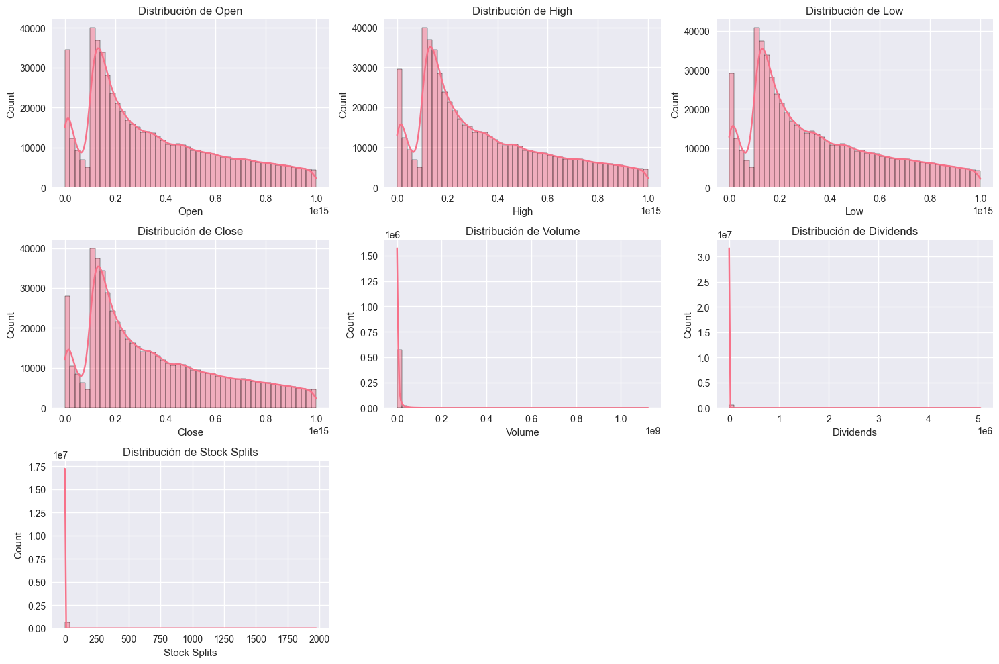
c:\Users\johan\miniconda3\envs\ml_venv\lib\site-packages\seaborn\_oldcore.py:1498: FutureWarning: is_categorical_dtype is deprecated and will be removed in a future version. Use isinstance(dtype, CategoricalDtype) instead
if pd.api.types.is_categorical_dtype(vector):
c:\Users\johan\miniconda3\envs\ml_venv\lib\site-packages\seaborn\_oldcore.py:1498: FutureWarning: is_categorical_dtype is deprecated and will be removed in a future version. Use isinstance(dtype, CategoricalDtype) instead
if pd.api.types.is_categorical_dtype(vector):
c:\Users\johan\miniconda3\envs\ml_venv\lib\site-packages\seaborn\_oldcore.py:1498: FutureWarning: is_categorical_dtype is deprecated and will be removed in a future version. Use isinstance(dtype, CategoricalDtype) instead
if pd.api.types.is_categorical_dtype(vector):
c:\Users\johan\miniconda3\envs\ml_venv\lib\site-packages\seaborn\_oldcore.py:1498: FutureWarning: is_categorical_dtype is deprecated and will be removed in a future version. Use isinstance(dtype, CategoricalDtype) instead
if pd.api.types.is_categorical_dtype(vector):
c:\Users\johan\miniconda3\envs\ml_venv\lib\site-packages\seaborn\_oldcore.py:1498: FutureWarning: is_categorical_dtype is deprecated and will be removed in a future version. Use isinstance(dtype, CategoricalDtype) instead
if pd.api.types.is_categorical_dtype(vector):
c:\Users\johan\miniconda3\envs\ml_venv\lib\site-packages\seaborn\_oldcore.py:1498: FutureWarning: is_categorical_dtype is deprecated and will be removed in a future version. Use isinstance(dtype, CategoricalDtype) instead
if pd.api.types.is_categorical_dtype(vector):
c:\Users\johan\miniconda3\envs\ml_venv\lib\site-packages\seaborn\_oldcore.py:1498: FutureWarning: is_categorical_dtype is deprecated and will be removed in a future version. Use isinstance(dtype, CategoricalDtype) instead
if pd.api.types.is_categorical_dtype(vector):
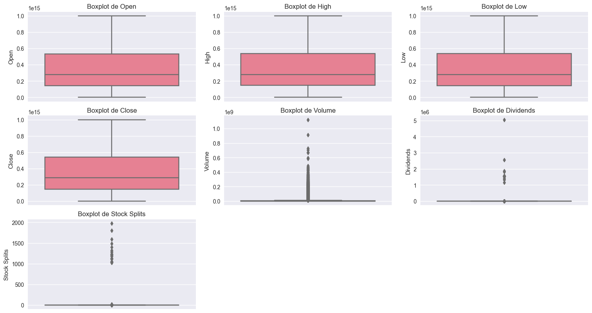
🔎 Detección de outliers (IQR):
Open: 0 posibles outliers
High: 0 posibles outliers
Low: 0 posibles outliers
Close: 0 posibles outliers
Volume: 66419 posibles outliers
Dividends: 6857 posibles outliers
Stock Splits: 71 posibles outliers
5. Análisis de Empresas#
Se explora cuántas empresas hay y cuáles son las más representadas en el dataset.
print("\n🏢 Análisis de empresas:")
print(f"Empresas únicas: {df['Company'].nunique()}")
print("\nTop 10 empresas con más registros:")
print(df['Company'].value_counts().head(10))
🏢 Análisis de empresas:
Empresas únicas: 491
Top 10 empresas con más registros:
Company
A 1258
NTR 1258
ORAN 1258
ON 1258
OKE 1258
ODFL 1258
O 1258
NXPI 1258
NWG 1258
NVS 1258
Name: count, dtype: int64
6. Análisis Bivariado#
Se analizan relaciones entre pares de variables numéricas, como correlaciones.
print("\n🔗 Análisis bivariado:")
corr_matrix = df[numeric_cols].corr()
plt.figure(figsize=(10, 8))
sns.heatmap(corr_matrix, annot=True, cmap='coolwarm', center=0)
plt.title('Matriz de Correlación')
plt.show()
plt.figure(figsize=(10, 6))
sns.scatterplot(data=df, x='Open', y='Close', alpha=0.3)
plt.title('Precio de Apertura vs Cierre')
plt.show()
🔗 Análisis bivariado:
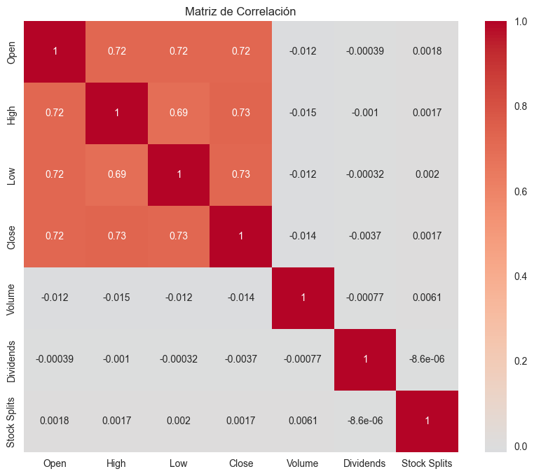
c:\Users\johan\miniconda3\envs\ml_venv\lib\site-packages\seaborn\_oldcore.py:1498: FutureWarning: is_categorical_dtype is deprecated and will be removed in a future version. Use isinstance(dtype, CategoricalDtype) instead
if pd.api.types.is_categorical_dtype(vector):
c:\Users\johan\miniconda3\envs\ml_venv\lib\site-packages\seaborn\_oldcore.py:1498: FutureWarning: is_categorical_dtype is deprecated and will be removed in a future version. Use isinstance(dtype, CategoricalDtype) instead
if pd.api.types.is_categorical_dtype(vector):
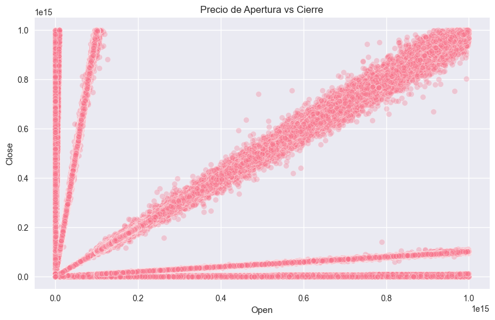
7. Análisis Temporal#
Se observa la evolución en el tiempo de precios y volúmenes.
print("\n📅 Análisis temporal:")
df['Year'] = df['Date'].dt.year
yearly_avg = df.groupby('Year')[['Open', 'High', 'Low', 'Close']].mean()
yearly_avg.plot(figsize=(12, 6))
plt.title('Precios Promedio por Año')
plt.grid(True)
plt.show()
plt.figure(figsize=(12, 6))
sns.barplot(data=df, x='Year', y='Volume', estimator=np.sum, ci=None)
plt.title('Volumen Total por Año')
plt.xticks(rotation=45)
plt.show()
📅 Análisis temporal:
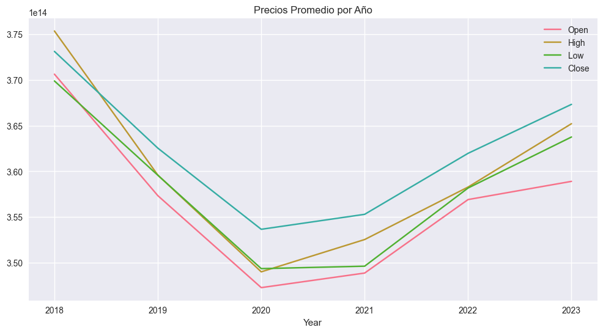
C:\Users\johan\AppData\Local\Temp\ipykernel_36320\1002435345.py:10: FutureWarning:
The `ci` parameter is deprecated. Use `errorbar=None` for the same effect.
sns.barplot(data=df, x='Year', y='Volume', estimator=np.sum, ci=None)
c:\Users\johan\miniconda3\envs\ml_venv\lib\site-packages\seaborn\_oldcore.py:1498: FutureWarning: is_categorical_dtype is deprecated and will be removed in a future version. Use isinstance(dtype, CategoricalDtype) instead
if pd.api.types.is_categorical_dtype(vector):
c:\Users\johan\miniconda3\envs\ml_venv\lib\site-packages\seaborn\_oldcore.py:1498: FutureWarning: is_categorical_dtype is deprecated and will be removed in a future version. Use isinstance(dtype, CategoricalDtype) instead
if pd.api.types.is_categorical_dtype(vector):
c:\Users\johan\miniconda3\envs\ml_venv\lib\site-packages\seaborn\_oldcore.py:1498: FutureWarning: is_categorical_dtype is deprecated and will be removed in a future version. Use isinstance(dtype, CategoricalDtype) instead
if pd.api.types.is_categorical_dtype(vector):
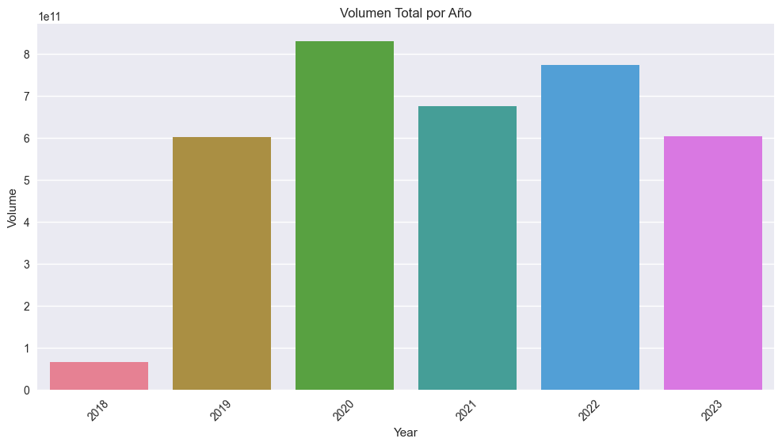
8. Análisis por Empresa#
Se analiza la evolución de precios de cierre para las empresas con mayor volumen de operaciones.
print("\n🏭 Análisis por empresa:")
top_companies = df.groupby('Company')['Volume'].sum().nlargest(5)
print("\nTop 5 empresas con mayor volumen de operaciones:")
print(top_companies)
for company in top_companies.index:
company_data = df[df['Company'] == company].set_index('Date')
plt.figure(figsize=(14, 5))
plt.plot(company_data['Close'])
plt.title(f'Evolución del Precio de Cierre - {company}')
plt.ylabel('Precio')
plt.xlabel('Fecha')
plt.grid(True)
plt.show()
🏭 Análisis por empresa:
Top 5 empresas con mayor volumen de operaciones:
Company
TSLA 168480836215
AAPL 130583503785
AMZN 97650968962
AMD 84350178302
F 81579990070
Name: Volume, dtype: int64
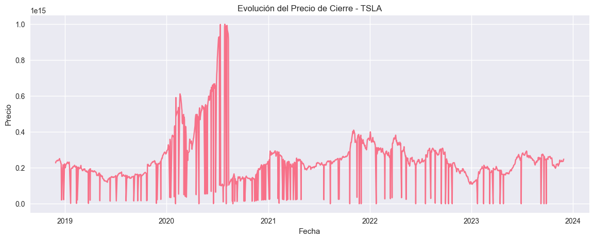
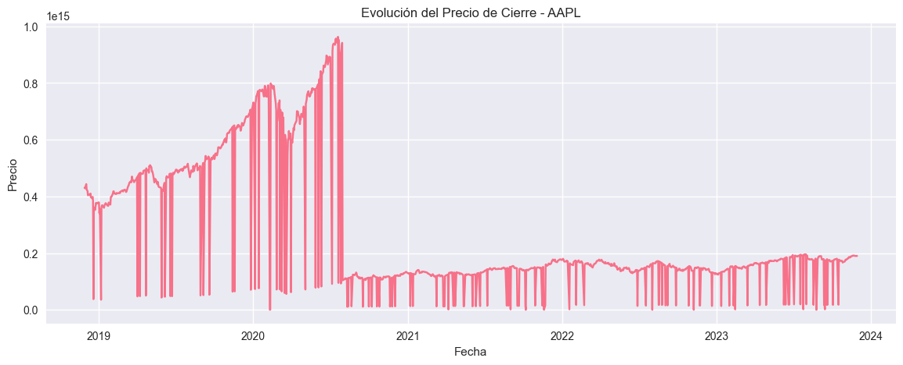
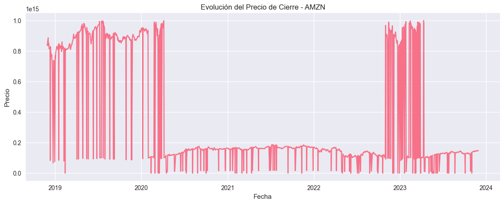
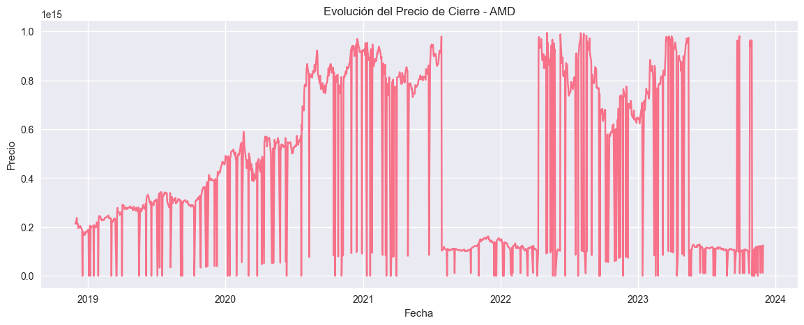
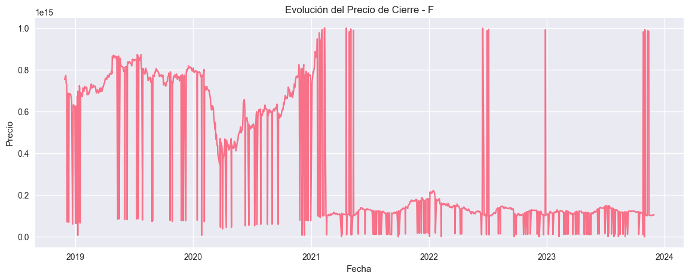
9. Dividendos y Splits#
Se identifican empresas que han pagado dividendos o realizado splits.
print("\n💰 Dividendos y splits:")
print("\nEmpresas que pagaron dividendos:")
print(df[df['Dividends'] > 0]['Company'].unique())
print("\nEmpresas que realizaron splits:")
print(df[df['Stock Splits'] > 0]['Company'].unique())
💰 Dividendos y splits:
Empresas que pagaron dividendos:
['A' 'AAPL' 'ABBV' 'ABEV' 'ABT' 'ACN' 'ADI' 'ADM' 'ADP' 'AEE' 'AEM' 'AEP'
'AFL' 'AIG' 'AJG' 'ALC' 'ALL' 'AMAT' 'AME' 'AMGN' 'AMP' 'AMT' 'AON' 'APD'
'APH' 'APO' 'APTV' 'ARES' 'ASML' 'AVB' 'AVGO' 'AWK' 'AXP' 'AZN' 'BA'
'BAC' 'BBD' 'BBVA' 'BCE' 'BCS' 'BDX' 'BEKE' 'BHP' 'BK' 'BKR' 'BLK' 'BMO'
'BMY' 'BN' 'BNS' 'BNTX' 'BP' 'BR' 'BRO' 'BSBR' 'BTI' 'BUD' 'BX' 'C' 'CAH'
'CARR' 'CAT' 'CB' 'CCEP' 'CCI' 'CCJ' 'CCL' 'CDW' 'CEG' 'CHD' 'CHT' 'CI'
'CL' 'CM' 'CMCSA' 'CME' 'CMI' 'CNI' 'CNQ' 'COF' 'COP' 'COR' 'COST' 'CP'
'CQP' 'CRH' 'CSCO' 'CSX' 'CTAS' 'CTRA' 'CTSH' 'CTVA' 'CVE' 'CVS' 'CVX'
'D' 'DAL' 'DB' 'DD' 'DE' 'DELL' 'DEO' 'DFS' 'DG' 'DHI' 'DHR' 'DIS' 'DLR'
'DOV' 'DOW' 'DTE' 'DUK' 'DVN' 'E' 'EA' 'EBAY' 'EC' 'ECL' 'ED' 'EFX' 'EIX'
'EL' 'ELP' 'ELV' 'EMR' 'ENB' 'EOG' 'EPD' 'EQIX' 'EQNR' 'EQR' 'ES' 'ET'
'ETN' 'ETR' 'EXC' 'EXR' 'F' 'FANG' 'FAST' 'FCNCA' 'FCX' 'FDX' 'FE' 'FERG'
'FIS' 'FITB' 'FMX' 'FNV' 'FTS' 'FTV' 'GD' 'GE' 'GEHC' 'GILD' 'GIS' 'GLW'
'GM' 'GOLD' 'GPN' 'GRMN' 'GS' 'GSK' 'GWW' 'HAL' 'HCA' 'HD' 'HDB' 'HEI'
'HES' 'HIG' 'HLN' 'HLT' 'HMC' 'HON' 'HPE' 'HPQ' 'HSBC' 'HSY' 'HUM' 'HWM'
'IBKR' 'IBM' 'IBN' 'ICE' 'IFF' 'IMO' 'INFY' 'ING' 'INTC' 'INTU' 'INVH'
'IR' 'ITUB' 'ITW' 'JCI' 'JD' 'JNJ' 'JPM' 'KDP' 'KHC' 'KKR' 'KLAC' 'KMB'
'KMI' 'KO' 'KR' 'KVUE' 'LEN' 'LHX' 'LIN' 'LLY' 'LMT' 'LNG' 'LOW' 'LRCX'
'LVS' 'LYB' 'LYG' 'MA' 'MAR' 'MCD' 'MCHP' 'MCK' 'MCO' 'MDLZ' 'MDT' 'MET'
'MFC' 'MLM' 'MMC' 'MMM' 'MO' 'MPLX' 'MPWR' 'MRK' 'MRVL' 'MS' 'MSCI'
'MSFT' 'MSI' 'MT' 'MTB' 'MU' 'NDAQ' 'NEE' 'NEM' 'NGG' 'NKE' 'NOC' 'NOK'
'NSC' 'NTES' 'NTR' 'NUE' 'NVDA' 'NVO' 'NVS' 'NWG' 'NXPI' 'O' 'ODFL' 'OKE'
'ORAN' 'ORCL' 'OTIS' 'OXY' 'PAYX' 'PBR' 'PCAR' 'PDX' 'PEG' 'PEP' 'PFE'
'PG' 'PGR' 'PH' 'PLD' 'PM' 'PNC' 'PPG' 'PPL' 'PRU' 'PSA' 'PSX' 'PUK'
'PWR' 'PXD' 'QCOM' 'QSR' 'RACE' 'RCI' 'RCL' 'RELX' 'RIO' 'RJF' 'RMD'
'ROK' 'ROL' 'ROST' 'RSG' 'RTX' 'RY' 'SAN' 'SAP' 'SBAC' 'SBUX' 'SCCO'
'SCHW' 'SHEL' 'SHW' 'SLB' 'SLF' 'SNY' 'SO' 'SPG' 'SPGI' 'SRE' 'STE'
'STLA' 'STM' 'STT' 'STZ' 'SU' 'SYK' 'SYY' 'T' 'TD' 'TDG' 'TEF' 'TEL'
'TFC' 'TGT' 'TJX' 'TLK' 'TMO' 'TRGP' 'TRI' 'TROW' 'TRP' 'TRV' 'TS' 'TSCO'
'TSM' 'TT' 'TTE' 'TU' 'TW' 'TXN' 'UBS' 'UL' 'UMC' 'UNH' 'UNP' 'UPS' 'URI'
'USB' 'V' 'VALE' 'VICI' 'VLO' 'VMC' 'VOD' 'VRSK' 'VZ' 'WAB' 'WCN' 'WDS'
'WEC' 'WELL' 'WFC' 'WIT' 'WM' 'WMB' 'WMT' 'WPM' 'WST' 'WTW' 'WY' 'XEL'
'XOM' 'XYL' 'YUM' 'ZBH' 'ZTS']
Empresas que realizaron splits:
['AAPL' 'AMZN' 'ANET' 'APH' 'BBD' 'BDX' 'BHP' 'BN' 'CM' 'CNC' 'CNQ' 'CP'
'CPRT' 'CSGP' 'CSX' 'DD' 'DELL' 'DHR' 'DTE' 'DXCM' 'ELP' 'EW' 'EXC'
'FAST' 'FTNT' 'FTV' 'GE' 'GOOGL' 'GSK' 'HDB' 'IBM' 'ISRG' 'ITUB' 'MCHP'
'MRK' 'NDAQ' 'NEE' 'NTES' 'NVDA' 'NVO' 'NVS' 'NWG' 'O' 'ODFL' 'PANW'
'PCAR' 'PFE' 'PUK' 'RJF' 'ROL' 'RTX' 'SHOP' 'SHW' 'SRE' 'T' 'TRI' 'TSLA'
'TT' 'TTD' 'TU' 'ZBH']
10. Hallazgos Clave#
Resumen de observaciones importantes obtenidas durante el EDA.
print("\n🔑 Hallazgos clave del EDA:")
print("1. Precios muestran distribuciones asimétricas.")
print("2. Alta correlación entre Open, High, Low y Close.")
print("3. Volumen altamente sesgado.")
print("4. Pocas empresas pagan dividendos regularmente.")
print("5. Existen valores atípicos que requieren revisión.")
print("6. Precios presentan variaciones y tendencias anuales.")
🔑 Hallazgos clave del EDA:
1. Precios muestran distribuciones asimétricas.
2. Alta correlación entre Open, High, Low y Close.
3. Volumen altamente sesgado.
4. Pocas empresas pagan dividendos regularmente.
5. Existen valores atípicos que requieren revisión.
6. Precios presentan variaciones y tendencias anuales.